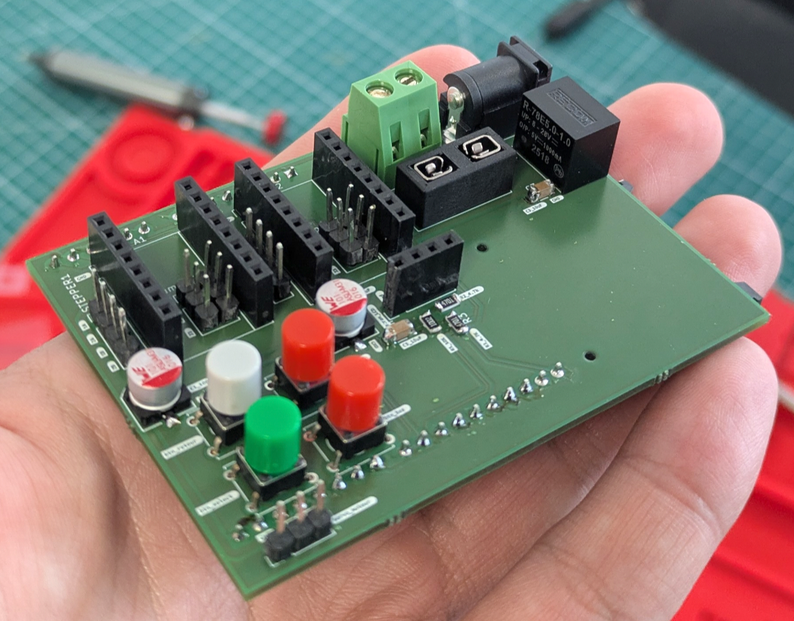

Fabrication et soudure
Cette section détaille la réalisation du circuit imprimé (PCB) sur-mesure de notre MachineThatDraws. Conçu pour accueillir l'ESP32 UNO et remplacer le shield standard de notre prototype, ce PCB a été commandé auprès d'un fabricant professionnel avant d'être intégralement assemblé et soudé à la main par notre équipe.
1. Assemblage et Soudure Manuelle
Une fois la carte nue réceptionnée, l'équipe a procédé au soudage manuel de l'ensemble des composants au fer à souder. Pour garantir un assemblage propre et éviter d'endommager les puces, l'ordre de montage suivant a été respecté :
- Composants CMS et passifs : Soudure en priorité des composants les plus bas et les plus petits (résistances, petits condensateurs) pour conserver un accès facile.
- Connectique et Supports : Soudure des pin headers (supports femelles) pour accueillir l'ESP32 et les drivers moteurs de façon amovible. Cela évite de les griller avec la chaleur du fer et permet de les remplacer facilement en cas de panne.
- Composants de puissance : Ajout final des borniers à vis robustes pour sécuriser l'alimentation électrique (12V et 5V) de la machine.
2. Rendu Final et Tests
Après l'assemblage complet, les tensions et les continuités ont été rigoureusement testées au multimètre pour écarter tout risque de court-circuit avant la première mise sous tension.
-

La carte contrôleur achevée :
Sur ce résultat final, le microcontrôleur ESP32 et les drivers moteurs sont parfaitement intégrés. Le câblage est propre, les alimentations sont séparées efficacement, et la carte est prête à être connectée aux moteurs pas-à-pas et au système de levage du stylo (Z) de la Machine That Draws.
3. Améliorations Proposées
Malgrès que notre PCB actuel soit pleinement fonctionnel et réponde aux exigences du cahier des charges si nous devions le refaire il serait différent :
- Rapprochement des condensateurs de découplage : Sur notre routage initial, les condensateurs étaient un peu trop éloignés. Si on devait le refaire, nous placerions les condensateurs de filtrage au plus près des broches
VMOTetGNDdes drivers de moteurs. Cela permet d'absorber efficacement les pics de courant et de réduire drastiquement le bruit électromagnétique sur la carte. - Inversion du bornier BAU et du fusible : Dans l'architecture actuelle, l'ordre des composants de protection n'est pas optimal. Il serait préférable d'inverser la position du bornier du Bouton d'Arrêt d'Urgence (BAU) et du fusible de protection. Placer le fusible en amont (au plus près de l'entrée de l'alimentation) permet de protéger l'intégralité du circuit, y compris le câblage du BAU, en cas de court-circuit.
- Intégration de pins pour capteurs : Nous ajouterions des *pin headers* dédiés à la connexion de capteurs de fin de course ce qui a été rajouter apres avoir souder la carte a cause d'un oublie.
- Optimisation des empreintes (Pads) : Pour faciliter la soudure manuelle au fer, nous agrandirions légèrement les pastilles des composants passifs et des connecteurs afin de permettre une meilleure répartition de la chaleur et de l'étain.
- Sérigraphie plus détaillée : Nous ajouterions plus d'indications textuelles directement sur le vernis de la carte (polarité des condensateurs, noms exacts des broches des moteurs et des capteurs) pour faciliter le câblage sans avoir à consulter le schéma technique sur ordinateur.